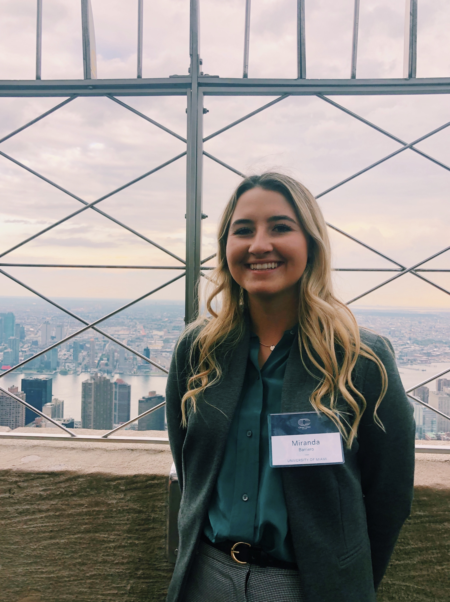

Miranda Barriero
Address: 7440 N Kendall Drive, Miami, FL 33156
Phone: 732-241-7665
Email: mgb95@miami.edu

Work and Leadership Experience
Intern at US Club Lacrosse
Contacted club and tournament directors to obtain information for the purpose of
enhancing the organization’s website to deliver an improved user experience
Conducted data collection and analysis to provide national
rankings of youth travel club teams
Promoted the company through social media by creating website
content and spotlight videos
Consulting Chair at the American Marketing Association
Responsible for heading all consulting projects; currently helping
Rice Mediterranean Kitchen
Actively doing project outreach to identify clients that the organization can help
with their marketing challenges
Creating and heading these committees to staff the consulting projects as needed
TL for Managing for Success in the Global Marketplace
Facilitate weekly workshops throughout the semester with a group of
freshmen to build their understanding of the topics in business which
include teamwork, culture, and communications
Assist the students in the adjustment from high school
to college by being a role model and resource
Work alongside professors to help communicate expectations to the
students and work with the students to ensure that these
expectations are satisfied
Time Spent at Positions (Months)
Intern
Consulting Chair
TL
3
1
5
Activities
UM Club Lacrosse (2017-Current), Member of Sigma Delta Tau (2018-Current),
Volunteer at Arbor Terrace of Middletown (2015-2017),
Volunteer for the Goodness Now Program (2015-2017)
Interests
Volunteering, photography, fashion, music
Skills
Excel, Tableau, Adobe Photoshop, Adobe InDesign, Adobe Excel